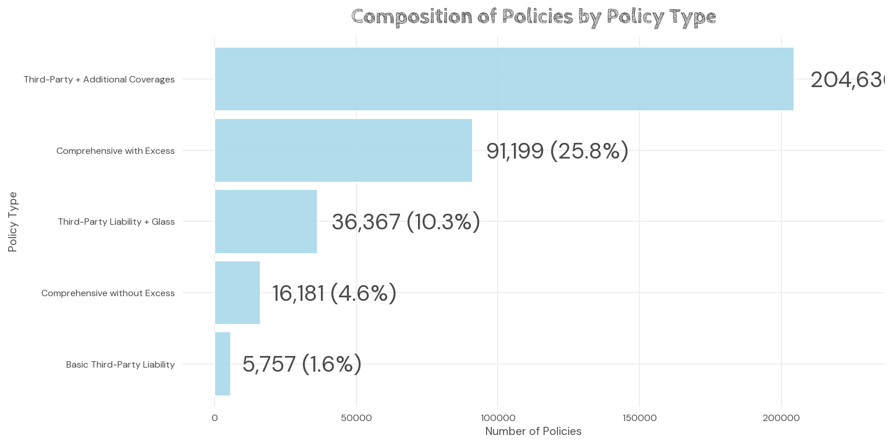
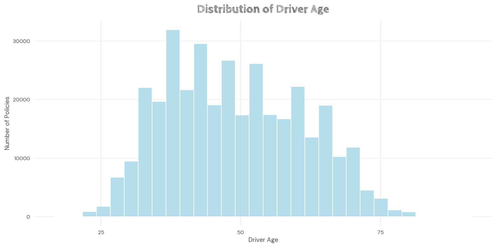
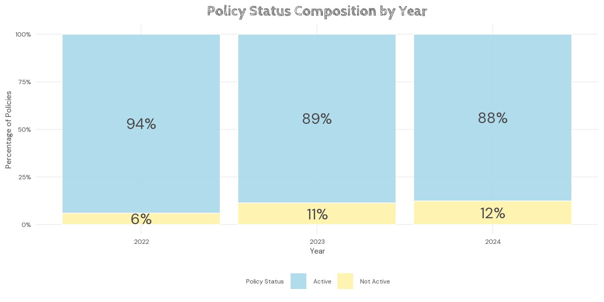
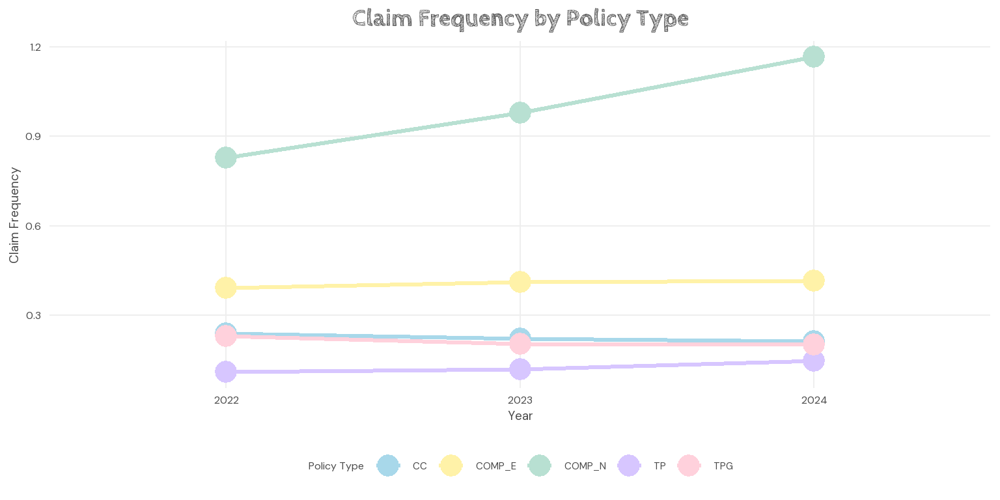
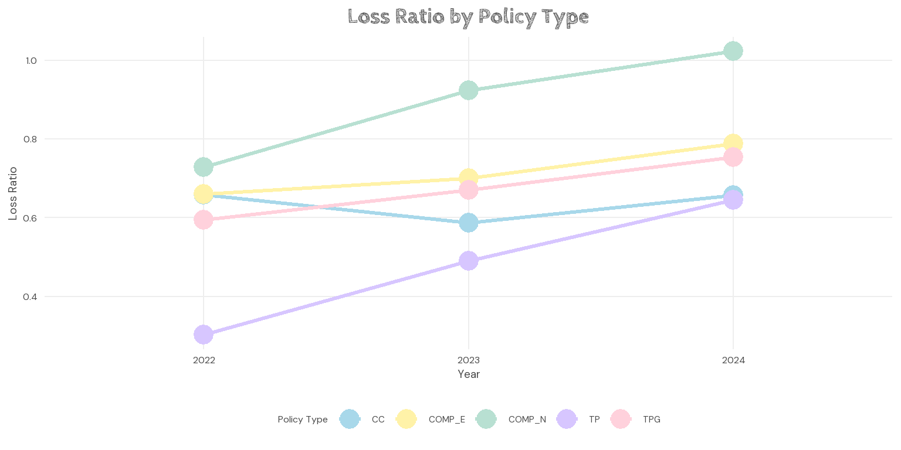
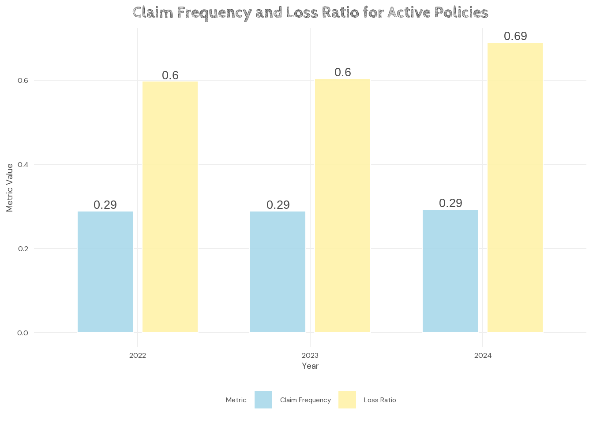
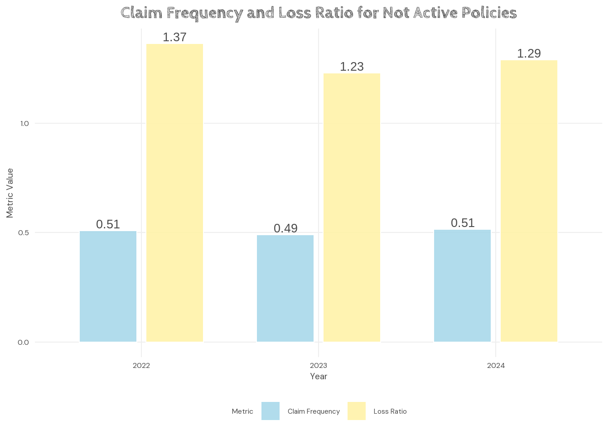
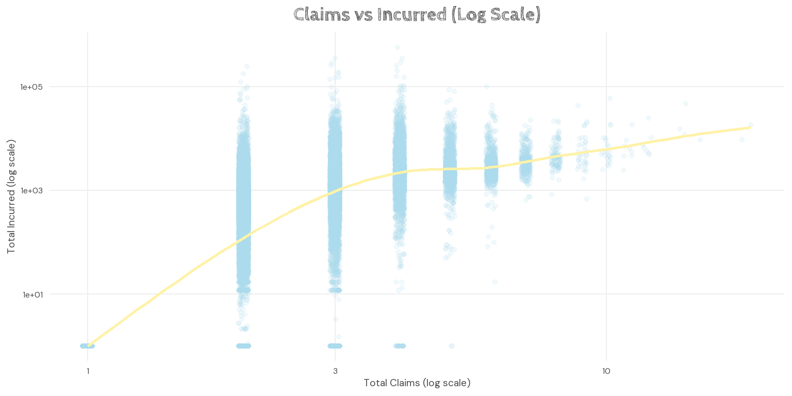
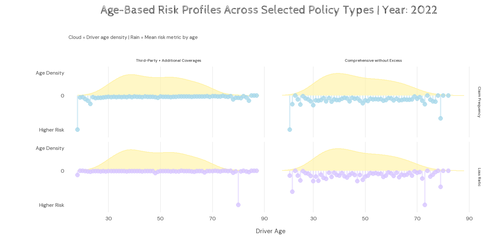

Executive Summary: Motor Insurance Portfolio Analysis
Portfolio Exposure Is Concentrated in Selected Policy Types
- Analyses the distribution of policies across product types to identify portfolio concentration.
- CC policies dominate exposure, increasing dependence on a few products.
Further details:
This chart examines how policies are distributed across product categories. The portfolio appears concentrated within CC policies, indicating that overall portfolio performance may depend heavily on a limited number of products. Such concentration can increase exposure to adverse performance if dominant products experience deteriorating claims behaviour or profitability.
Portfolio Exposure Is Dominated by Middle-Aged Drivers

- Examines the age distribution of insured drivers to understand demographic exposure.
- Most policies are held by drivers aged 35–60, indicating concentrated exposure.
Further details:
This distribution shows that most insured drivers fall within middle age groups, particularly around ages 35 to 60. Since exposure is concentrated within these demographics, understanding their claims behaviour becomes important when assessing portfolio risk and profitability. Younger and older drivers contribute comparatively less exposure.
Inactive Policies Increase Over Time, Suggesting Retention Pressure

- Compares the proportion of active and inactive policies across years to assess retention trends.
- Inactive policies increase gradually, suggesting potential weakening retention.
Further details:
This chart tracks the proportion of active and inactive policies over time as an indicator of retention behaviour. A gradual increase in inactive policies may suggest weakening retention or higher churn within the portfolio. Persistent increases in inactive status could affect long-term premium growth and portfolio stability.
Claim Frequency Varies Significantly Across Policy Types

- Compares claim frequency (claims relative to exposure) across policy types over time.
- COMP_N consistently records higher claim frequency, indicating elevated risk.
Further details:
Claim frequency measures how often claims occur relative to exposure. Comparing policy types reveals meaningful differences in claims occurrence over time. COMP_N consistently records higher claim frequency, suggesting elevated claims risk compared with other products. Such patterns may indicate differences in underlying risk profiles or policyholder behaviour.
Certain Policy Types Show Persistent Underwriting Losses

- Evaluates underwriting profitability using loss ratio (incurred losses relative to premiums).
- COMP_N exceeds loss ratio >1, suggesting persistent underwriting losses.
Further details:
Loss ratio compares incurred losses against premiums earned and serves as an indicator of underwriting profitability. Values exceeding one imply claims costs surpass premium income. The results suggest that COMP_N exhibits persistently weaker profitability, potentially indicating pricing concerns or higher underlying risk.
Inactive Policies Exhibit Higher Risk and Poorer Profitability
Active Policies

Not Active Policies

- Compares claim frequency and loss ratio between active and inactive policy groups.
- Inactive policies display higher risk indicators and poorer profitability.
Further details: Activity Status Analysis — Full Analysis
This comparison evaluates claim frequency and loss ratio between active and inactive policy groups. Inactive policies consistently display higher values across both metrics, suggesting greater claims occurrence alongside poorer underwriting outcomes. These patterns imply that inactive segments may contribute disproportionately to portfolio risk and losses.
Low Claim Frequency Can Still Produce High Loss Severity

- Explores the relationship between claim occurrence and incurred losses using log scales.
- Lower claim counts may still generate disproportionately large losses.
Further details:
This scatter plot explores the relationship between total claims and incurred losses using logarithmic scales. While more claims generally correspond to higher losses, some observations show substantial losses despite relatively low claim counts. This highlights the importance of considering claim severity alongside claim frequency when assessing risk exposure.
Risk Patterns Vary Across Driver Age and Policy Type

- Examines how claim frequency and loss ratio vary across driver age and policy type.
- Risk patterns differ by age group and evolve across years.
Further details:
This visual examines how driver age relates to claim frequency and loss ratio across selected policy types over time. The density distribution represents portfolio exposure, while risk metrics indicate relative performance by age group. Patterns suggest that risk is not evenly distributed and may vary according to both demographic characteristics and policy structure.